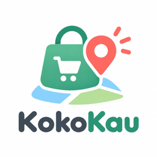
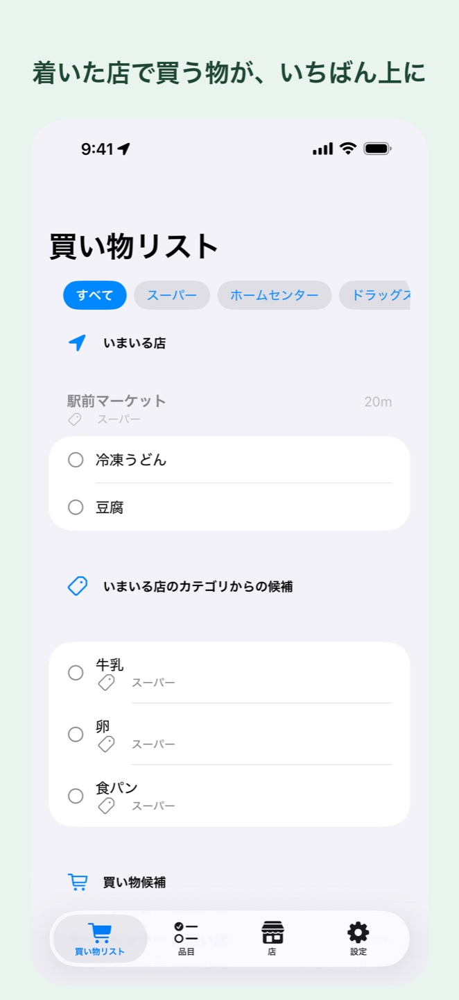
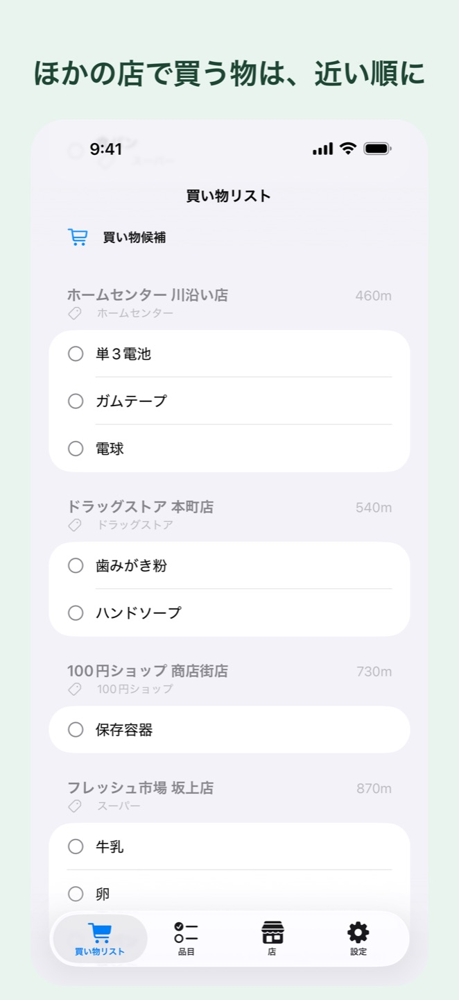
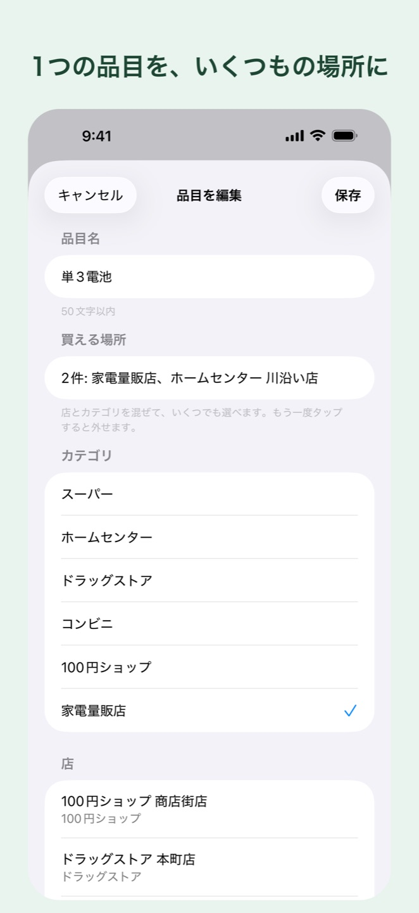

KokoKau App Store で近日公開着いた店で思い出す買い物リスト
買う物を、買える店やカテゴリと一緒に登録。その店に着いたら、そこで買う物が1通の通知にまとまって届きます。
iPhone 専用・無料・広告なし・アカウント登録なし
店名で検索して登録。出てこない店は、地図にピンを立てて名前を付けます。店には「スーパー」などのカテゴリを1つ付けます。
「牛乳はスーパーならどこでも」「電池はホームセンターか、いつもの店」。混ぜて選べます。
その店で買える物をまとめて1通。店の前を車で通り過ぎるだけのときは、なるべく鳴らしません。


